Introduction
Visual consistency is key to professional data visualization. This
vignette shows you how to use and customize theme_benvi()
to create polished, publication-ready graphics.
The theme_benvi() Theme
theme_benvi() provides a clean, modern aesthetic
designed for clarity and readability:
- Clean background: White with minimal gridlines
- Professional typography: Poppins font family
- Smart defaults: Legend on top, appropriate text sizes
- Flexible: Easy to customize
Basic Usage
Simply add theme_benvi() to any ggplot:
spo_latest <- subset(sales_report, name_muni == "São Paulo" & date == max(date))
ggplot(spo_latest, aes(x = price_m2_listing, y = price_m2_contract)) +
geom_point(color = benvi_palette("benvi_blue")[3], size = 3) +
labs(
title = "Listing vs Contract Prices",
subtitle = "Using theme_benvi()",
x = "Listing Price (R$/m²)",
y = "Contract Price (R$/m²)"
) +
theme_benvi()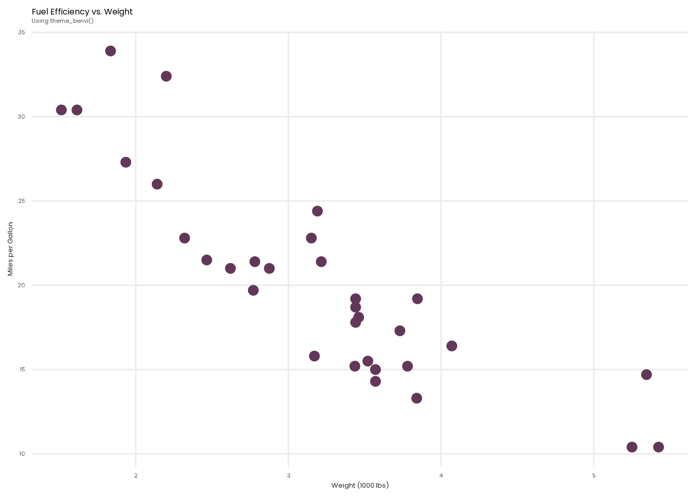
Comparing with Default Theme
# Create base plot
p <- ggplot(mtcars, aes(x = wt, y = mpg, color = as.factor(cyl))) +
geom_point(size = 3) +
scale_color_benvi_d(pal_name = "qual_5", name = "Cylinders") +
labs(
title = "Fuel Efficiency Analysis",
x = "Weight (1000 lbs)",
y = "Miles per Gallon"
)
# Default ggplot2 theme
p1 <- p + labs(subtitle = "Default theme_gray()") + theme_gray()
# benvi theme
p2 <- p + labs(subtitle = "theme_benvi()") + theme_benvi()
# Display side by side (requires patchwork or gridExtra)
# For vignette, we'll show separately
p1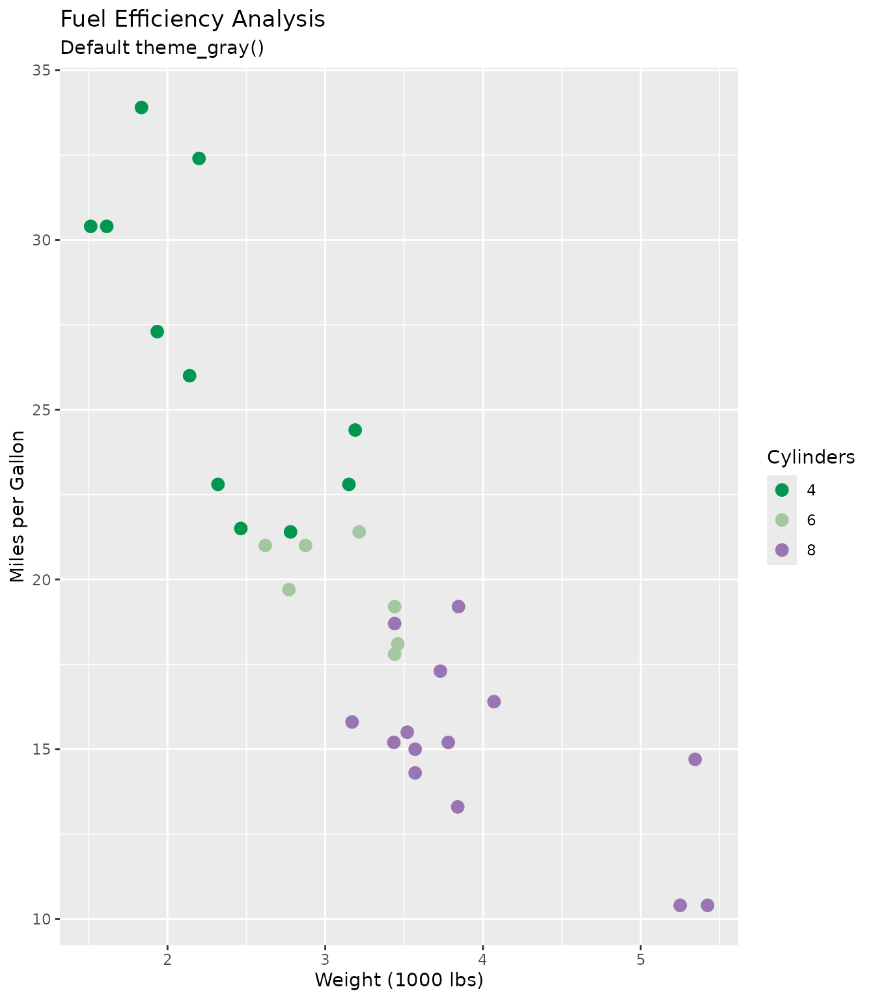
p2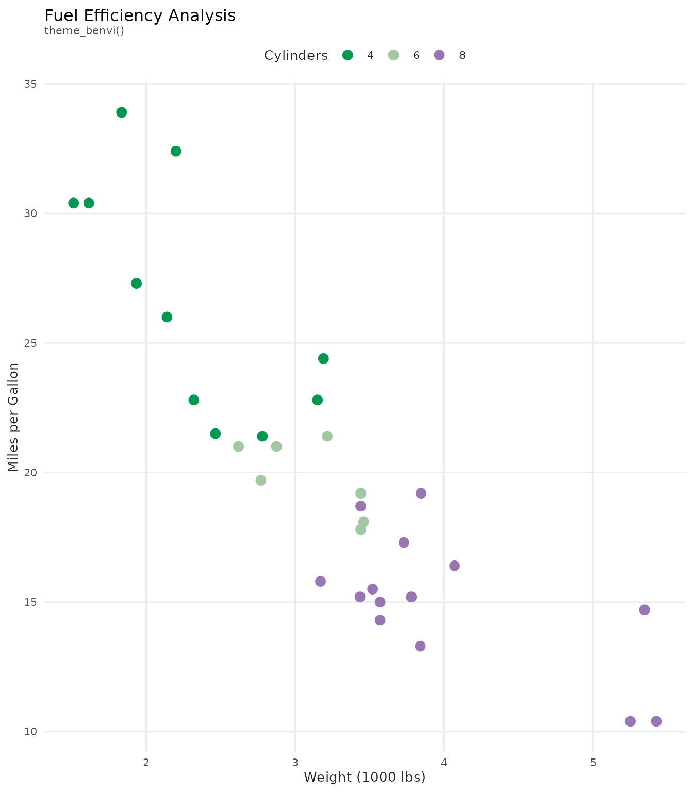
Theme Components
Typography
theme_benvi() uses the Poppins font
with carefully chosen sizes:
- Title: 12pt, black
- Subtitle: 8pt, dark gray
- Body text: 10pt, dark gray
- Caption: 6pt, dark gray
ggplot(iqa, aes(x = date, y = index)) +
geom_line(color = benvi_palette("benvi_blue")[1], linewidth = 1) +
labs(
title = "Title: Clear and Prominent",
subtitle = "Subtitle: Provides additional context",
x = "X-axis label",
y = "Y-axis label",
caption = "Caption: Source information or notes"
) +
theme_benvi()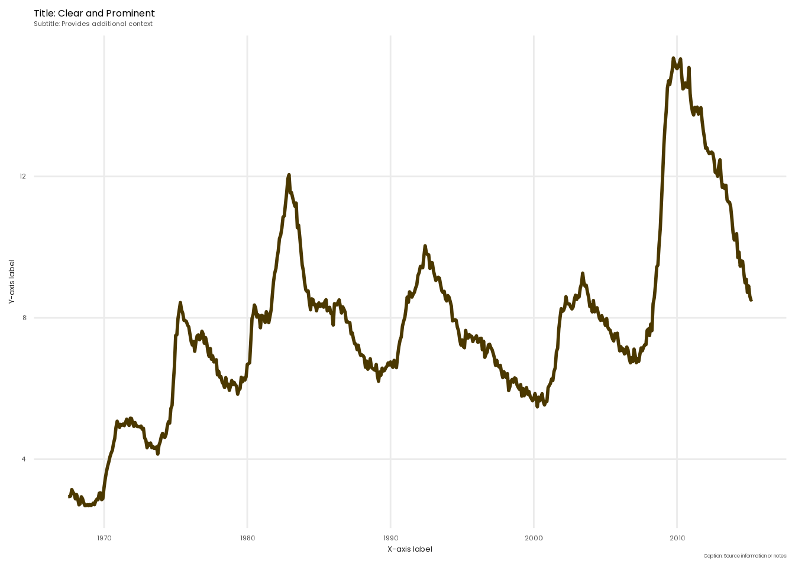
Grid Lines
Only major grid lines are shown for cleaner appearance:
# With theme_benvi (major grid only)
ggplot(mtcars, aes(x = factor(cyl), y = mpg)) +
geom_boxplot(fill = benvi_palette("greens")[1]) +
labs(title = "Clean Grid: Major Lines Only") +
theme_benvi()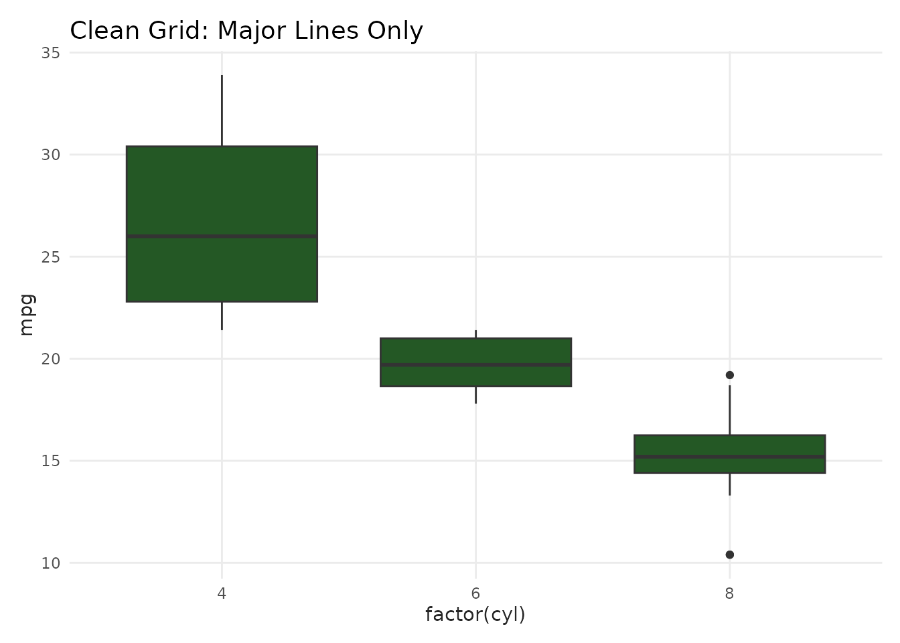
Legend Position
Default legend position is on top for better readability:
ggplot(mtcars, aes(x = wt, y = mpg, color = as.factor(cyl))) +
geom_point(size = 3) +
scale_color_benvi_d(pal_name = "purples", name = "Cylinders") +
labs(title = "Legend on Top (Default)") +
theme_benvi()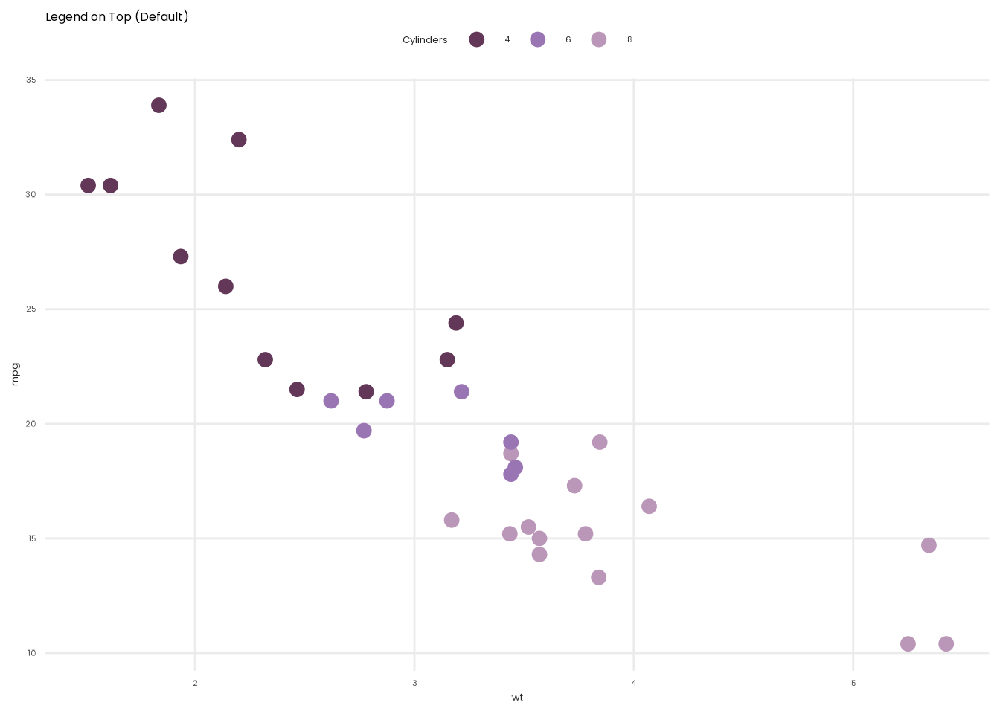
Font Management
Modern Font System (v1.1.0+)
benviplot uses a modern font system based on
systemfonts. Fonts are installed to your system once and work across all
R sessions.
One-Time Font Setup
Install Poppins font to your system:
# Recommended: Complete setup in one command
setup_benvi_fonts()
# Or install just the font
install_poppins()That’s it! The font is now available system-wide and will work in all R sessions.
Automatic Fallback
If Poppins isn’t installed, theme_benvi() automatically
falls back to your system’s default font. You’ll see a one-time message
suggesting installation:
# Works even without Poppins installed
ggplot(mtcars, aes(wt, mpg)) +
geom_point() +
theme_benvi()
#> ℹ Poppins font not found. Using system default font instead.
#> ℹ Install Poppins with: benviplot::install_poppins()Check Font Status
Verify your font setup:
# Check if Poppins is installed
check_poppins_installed()
# Get full status report
font_status()Using Other Fonts
Override the default font family with theme():
ggplot(mtcars, aes(wt, mpg)) +
geom_point() +
theme_benvi() +
theme(text = element_text(family = "Roboto"))For Best Results: Install ragg
For optimal text rendering quality:
install.packages("ragg")
# Then configure RStudio:
# Tools > Global Options > General > Graphics > Backend: AGGSee vignette("font-setup") for detailed instructions and
troubleshooting.
Customizing theme_benvi()
theme_benvi() is a starting point. Customize it with
additional theme() calls:
Change Legend Position
ggplot(mtcars, aes(x = wt, y = mpg, color = as.factor(cyl))) +
geom_point(size = 3) +
scale_color_benvi_d(pal_name = "oranges", name = "Cylinders") +
labs(title = "Legend on Right") +
theme_benvi() +
theme(legend.position = "right")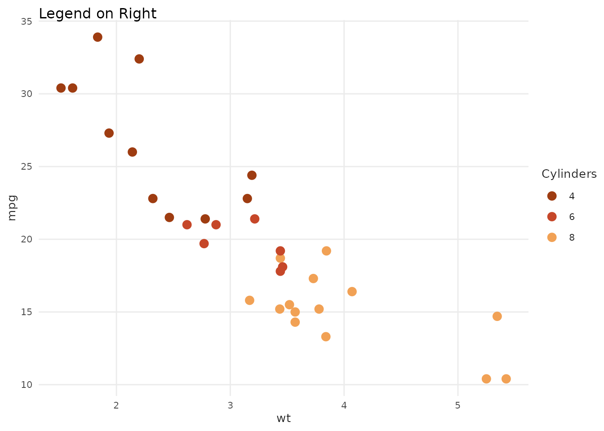
Adjust Text Sizes
ggplot(mtcars, aes(x = wt, y = mpg)) +
geom_point(color = benvi_palette("yellows")[1], size = 3) +
labs(
title = "Larger Text for Presentations",
x = "Weight",
y = "MPG"
) +
theme_benvi() +
theme(
plot.title = element_text(size = 16),
axis.title = element_text(size = 12),
axis.text = element_text(size = 10)
)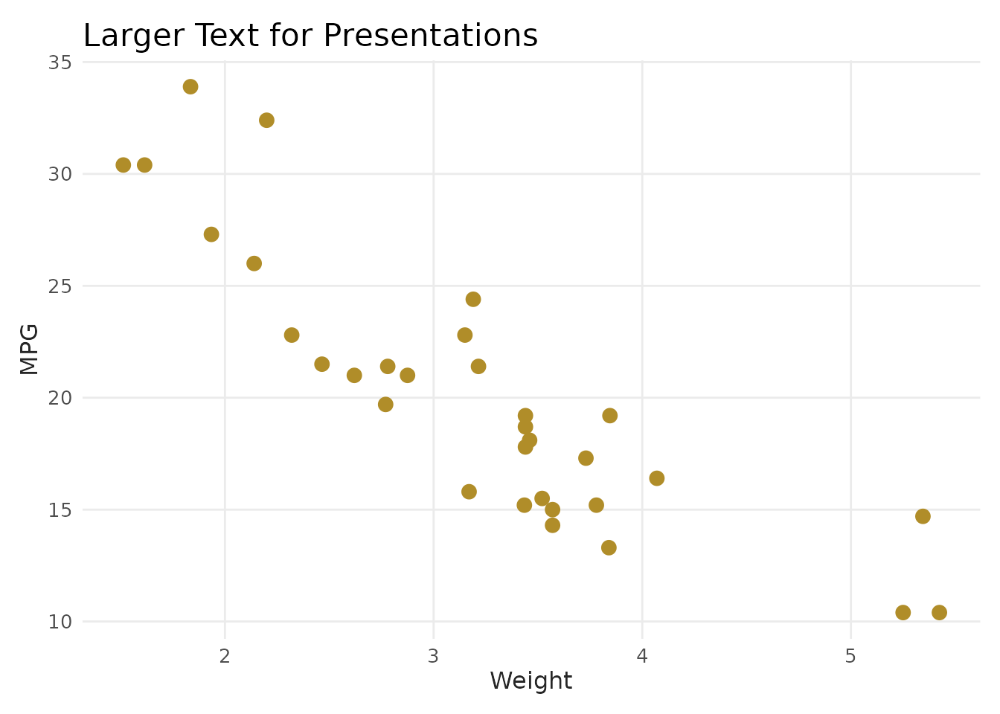
Rotate Axis Labels
products <- data.frame(
product = c("Product A", "Product B", "Product C", "Product D"),
sales = c(120, 200, 150, 180)
)
ggplot(products, aes(x = product, y = sales)) +
geom_col(fill = benvi_palette("blues")[1]) +
labs(title = "Rotated X-Axis Labels") +
theme_benvi() +
theme(axis.text.x = element_text(angle = 45, hjust = 1))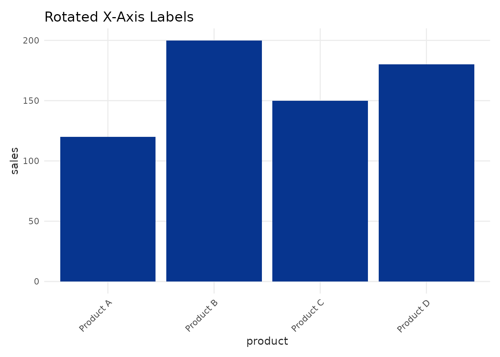
Remove Grid Lines
ggplot(mtcars, aes(x = wt, y = mpg)) +
geom_point(color = benvi_palette("rio_qual")[1], size = 3) +
labs(title = "No Grid Lines") +
theme_benvi() +
theme(
panel.grid.major = element_blank(),
panel.grid.minor = element_blank()
)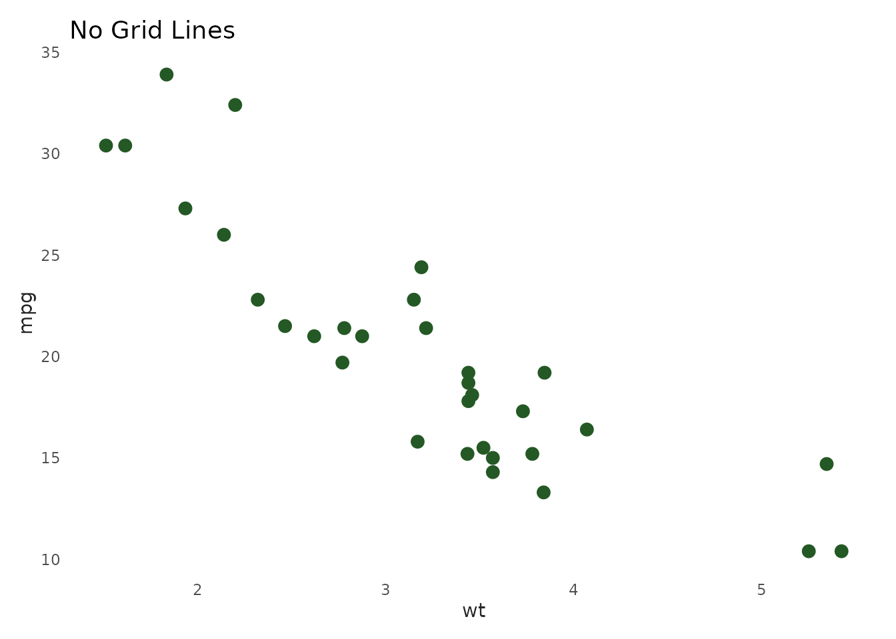
Add Background Color
ggplot(economics, aes(x = date, y = unemploy)) +
geom_area(fill = benvi_palette("seq_purples")[5], alpha = 0.7) +
labs(title = "Custom Background Color") +
theme_benvi() +
theme(
plot.background = element_rect(fill = "#f5f5f5"),
panel.background = element_rect(fill = "#ffffff")
)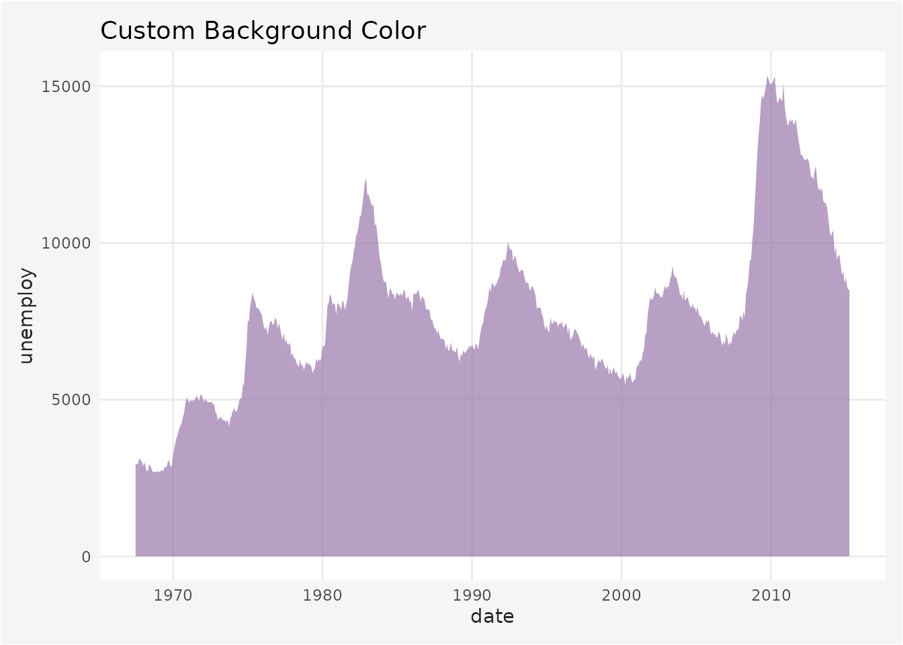
Creating Publication-Ready Plots
Elements of a Publication Plot
- Clear title and subtitle
- Labeled axes with units
- Data source in caption
- Appropriate color palette
- Legend (if needed)
- Clean, minimal design
# Sample data
index_subset <- subset(
iqaiw,
rooms == "Total" & name_muni %in% c("São Paulo", "Rio de Janeiro", "Belo Horizonte")
)
# Publication-ready plot
ggplot(index_subset, aes(x = date, y = index, color = name_muni)) +
geom_line(linewidth = 1.2) +
scale_color_benvi_d(
pal_name = "qual_benvi",
name = "City"
) +
labs(
title = "Median Home Prices in Major Texas Cities",
subtitle = "2000-2015",
x = "Year",
y = "Median Price ($1000s)",
caption = "Source: Texas A&M Real Estate Center"
) +
theme_benvi() +
theme(
plot.title = element_text(size = 14, face = "bold"),
legend.position = "bottom"
)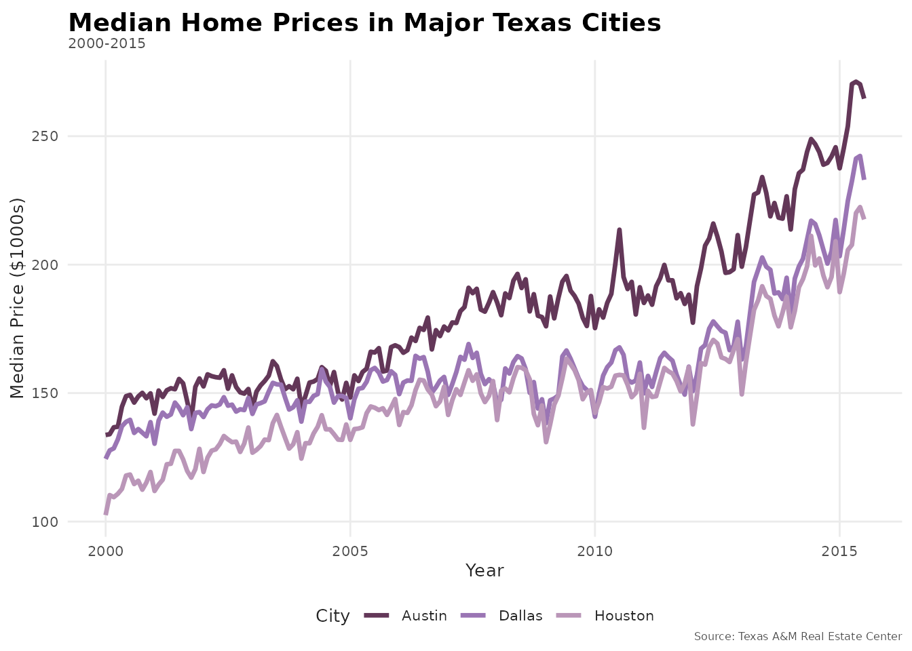
Faceted Plot
ggplot(mtcars, aes(x = wt, y = mpg)) +
geom_point(color = benvi_palette("qual_5")[1], size = 2) +
geom_smooth(
method = "lm",
se = FALSE,
color = benvi_palette("qual_5")[2]
) +
facet_wrap(~ cyl, labeller = label_both) +
labs(
title = "Fuel Efficiency by Cylinder Count",
subtitle = "Linear regression fits shown",
x = "Weight (1000 lbs)",
y = "Miles per Gallon",
caption = "Data: mtcars dataset"
) +
theme_benvi() +
theme(
strip.text = element_text(size = 10, face = "bold")
)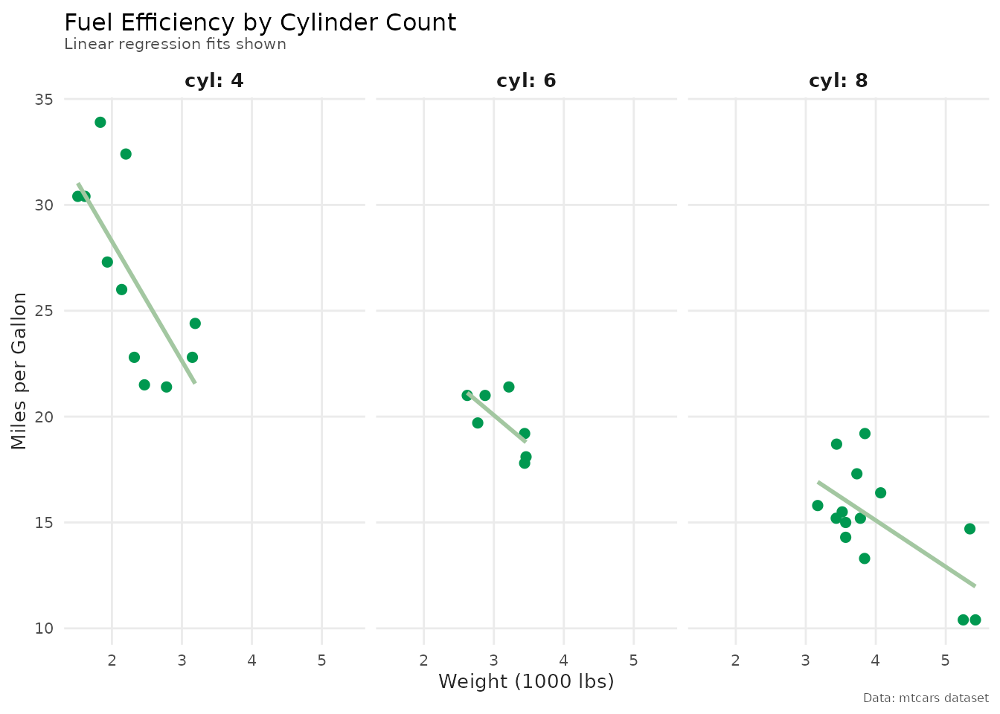
Advanced Customization
Creating a Custom Theme
Build on theme_benvi() to create your own theme:
# Define custom theme
theme_presentation <- function() {
theme_benvi() +
theme(
# Larger text for visibility
text = element_text(size = 14),
plot.title = element_text(size = 18, face = "bold"),
plot.subtitle = element_text(size = 14),
axis.title = element_text(size = 14),
axis.text = element_text(size = 12),
# Legend
legend.text = element_text(size = 12),
legend.title = element_text(size = 12, face = "bold"),
legend.position = "bottom",
# More spacing
plot.margin = margin(20, 20, 20, 20)
)
}
# Use custom theme
ggplot(mtcars, aes(x = wt, y = mpg, color = as.factor(cyl))) +
geom_point(size = 4) +
scale_color_benvi_d(pal_name = "purples", name = "Cylinders") +
labs(
title = "Presentation-Sized Plot",
subtitle = "Larger text for readability"
) +
theme_presentation()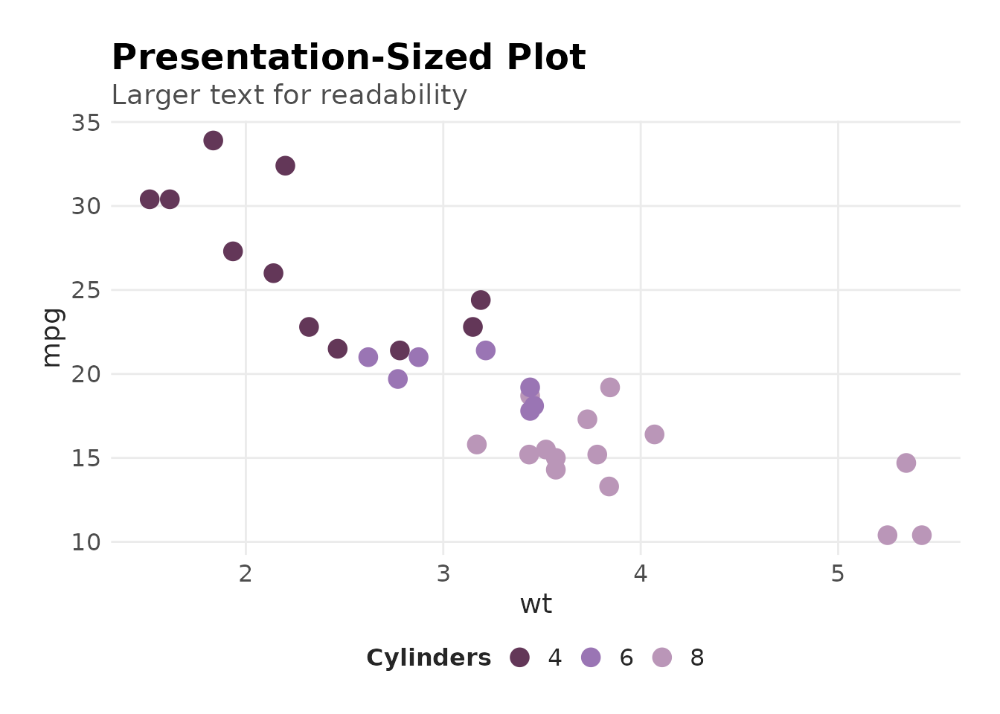
Theme for Reports
theme_report <- function() {
theme_benvi() +
theme(
# Smaller, compact
text = element_text(size = 9),
plot.title = element_text(size = 11),
plot.subtitle = element_text(size = 9),
# No legend title to save space
legend.title = element_blank(),
legend.position = "top",
# Tight margins
plot.margin = margin(5, 5, 5, 5)
)
}
# Use in report
ggplot(economics, aes(x = date, y = uempmed)) +
geom_line(color = benvi_palette("browns")[1]) +
labs(
title = "Median Unemployment Duration",
caption = "Source: FRED"
) +
theme_report()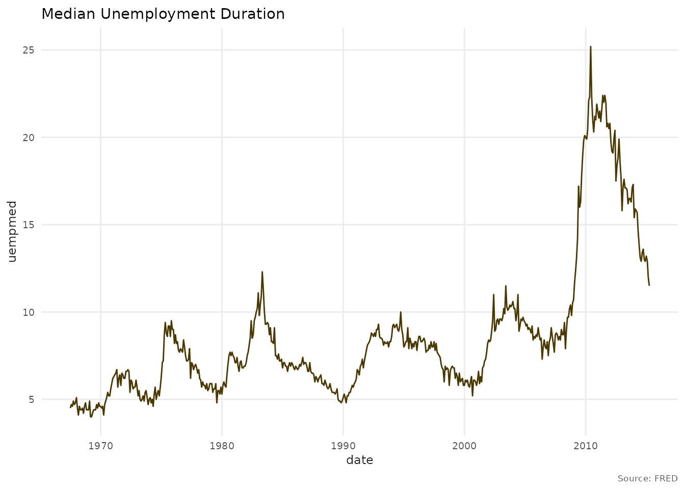
Combining Themes with Scales
Always use benvi scales with benvi theme for consistency:
ggplot(mtcars, aes(x = factor(cyl), y = mpg, fill = factor(cyl))) +
geom_boxplot(show.legend = FALSE) +
scale_fill_benvi_d(pal_name = "pinks") + # benvi scale
labs(
title = "MPG Distribution by Cylinders",
x = "Number of Cylinders",
y = "Miles per Gallon"
) +
theme_benvi() # benvi theme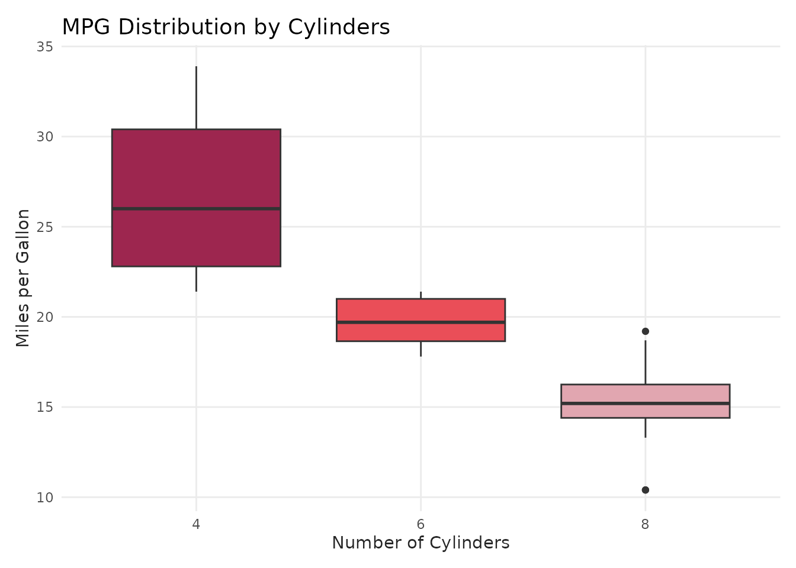
Saving Plots
Recommended: Use ggsave_benvi()
benviplot provides ggsave_benvi() which
automatically uses the ragg graphics device for high-quality output:
p <- ggplot(mtcars, aes(x = wt, y = mpg)) +
geom_point(color = benvi_palette("purples")[1], size = 3) +
labs(title = "Fuel Efficiency") +
theme_benvi()
# Recommended: Uses ragg automatically for PNG
ggsave_benvi("plot.png", p)
# PDF (vector graphics)
ggsave_benvi("plot.pdf", p, width = 7, height = 5)Benefits of ggsave_benvi(): - Automatically uses ragg device for PNG files (better quality, no font issues) - Smart defaults (300 DPI, 7x5 inches) - Consistent output across platforms
For Print
# High-resolution for publication
ggsave_benvi("plot.png", p, width = 7, height = 5)For Presentations
# Larger size for slides
ggsave_benvi("slide.png", p, width = 10, height = 6)For Web
# Standard web resolution
ggsave_benvi("web_plot.png", p, width = 8, height = 5)Accessibility Tips
Color Considerations
# Use patterns in addition to colors
ggplot(mtcars, aes(x = factor(cyl), y = mpg, fill = factor(cyl))) +
geom_violin(show.legend = FALSE) +
scale_fill_benvi_d(pal_name = "purples") +
labs(
title = "Distribution Shape Helps Convey Information",
subtitle = "Don't rely solely on color",
x = "Cylinders"
) +
theme_benvi()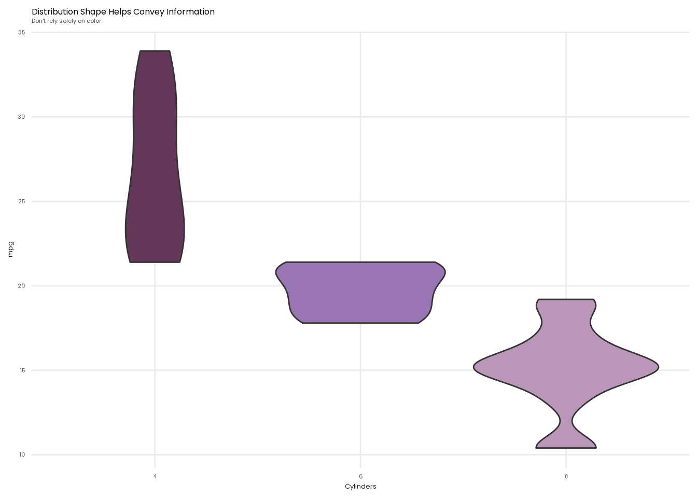
Sufficient Contrast
Ensure text is readable:
# Good contrast between text and background
ggplot(mtcars, aes(x = wt, y = mpg)) +
geom_point(size = 3, color = benvi_palette("browns")[1]) +
labs(
title = "Clear, High-Contrast Text",
x = "Weight",
y = "MPG"
) +
theme_benvi() +
theme(
plot.background = element_rect(fill = "white"),
text = element_text(color = "black")
)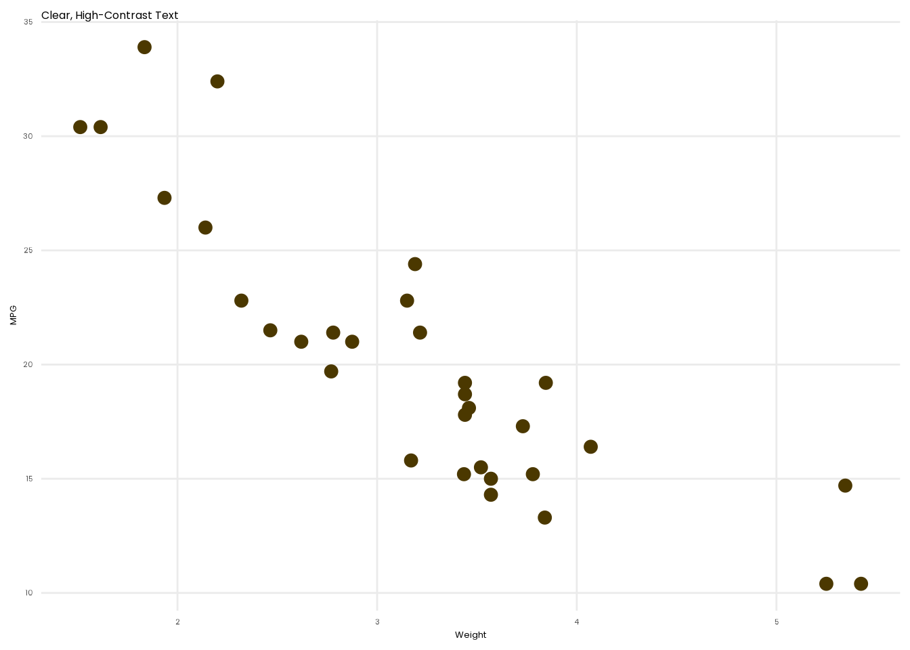
Common Styling Patterns
Minimal Plot
ggplot(economics, aes(x = date, y = unemploy)) +
geom_line(color = benvi_palette("browns")[1], linewidth = 1) +
theme_benvi() +
theme(
axis.title = element_blank(),
panel.grid = element_blank(),
plot.title = element_text(face = "bold")
) +
labs(title = "US Unemployment")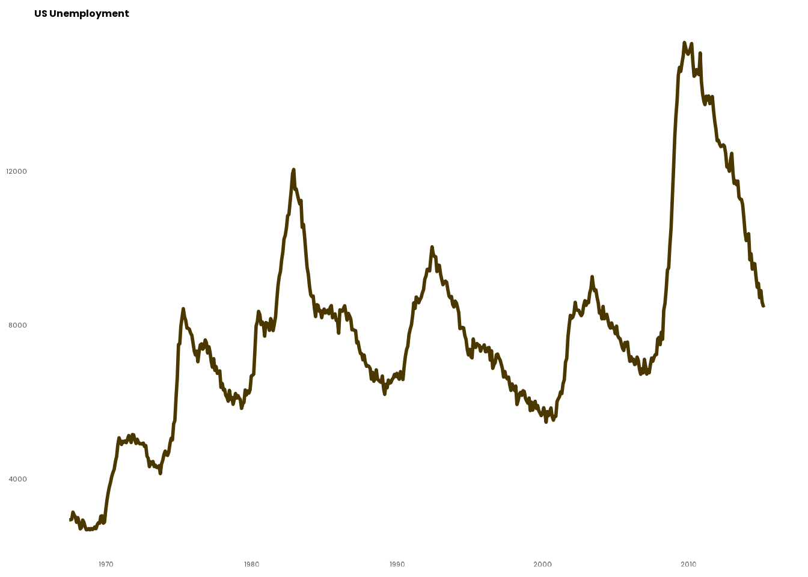
Data-Focused (No Decorations)
ggplot(mtcars, aes(x = wt, y = mpg)) +
geom_point(size = 3, color = benvi_palette("rio_qual")[1]) +
theme_benvi() +
theme(
panel.grid = element_blank(),
axis.line = element_line(color = "gray30"),
axis.ticks = element_line(color = "gray30")
)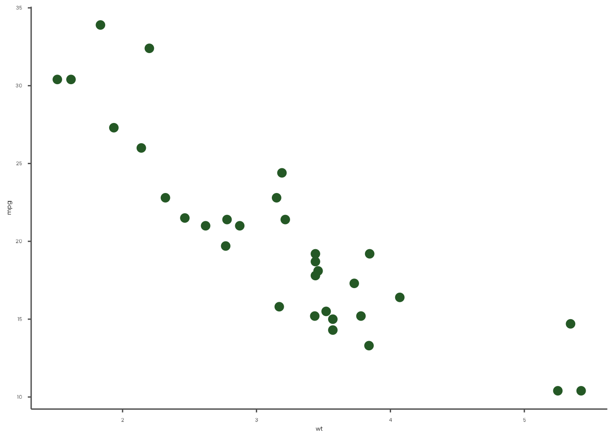
Highlighted Plot
# Emphasize one series
mtcars_highlight <- mtcars
mtcars_highlight$highlight <- ifelse(mtcars$cyl == 6, "Six", "Other")
ggplot(mtcars_highlight, aes(x = wt, y = mpg, color = highlight)) +
geom_point(size = 3) +
scale_color_manual(
values = c("Six" = benvi_palette("purples")[1], "Other" = "gray70")
) +
labs(
title = "Highlighting 6-Cylinder Vehicles",
subtitle = "Others shown in gray",
color = NULL
) +
theme_benvi()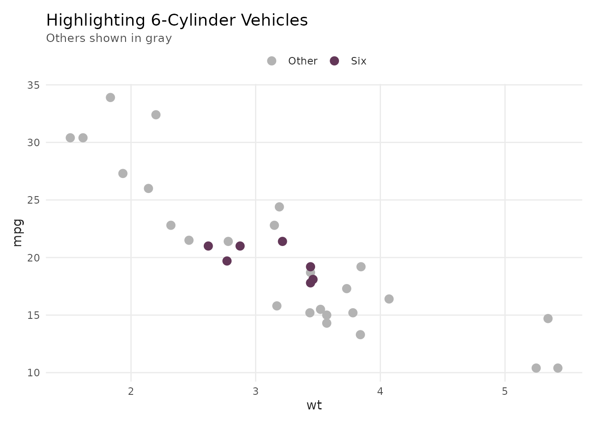
Summary
In this vignette you learned:
- ✓ How to use
theme_benvi()for professional plots - ✓ Font management and troubleshooting
- ✓ Customizing theme elements
- ✓ Creating publication-ready graphics
- ✓ Building custom themes
- ✓ Accessibility considerations
- ✓ Common styling patterns
Next Steps
- Review
vignette("color-palettes")for palette selection - See
vignette("plot-functions")for helper functions - Explore
?theme_benvifor full documentation